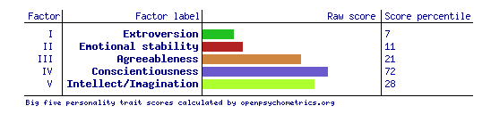

Big 5 Personality Test Results

Factor I was labelled as Extroversion by the developers of the IPIP-BFFM. Factor I is sometimes given other names,
such as Surgency or Positive Emotionality.
Individuals who score high on Factor I one are outgoing and social. Individuals who score low tend to be shut ins.
Factor II is labeled as Emotional Stability. Factor II is often referred to by other names, such as Neruoticism or
Negative Emotionality (in these two cases interpretations are inverted, as Neruoticism and Negative Emotionality can be
though of as the opposite of Emotional Stability).
Factor III is labeled as Agreeableness. A person high in agreeableness is friendly and optimistic. Low scorers are critical and aggressive.
Factor IV is labeled as Conscientiousness. Individuals who score high on this factor are careful and diligent.
Low scorers are impulsive and disorganized.
Factor V is labeled as Intellect/Imagination. This factor is also often called Openness to Experience.
People who score low tend to be traditional and conventional.